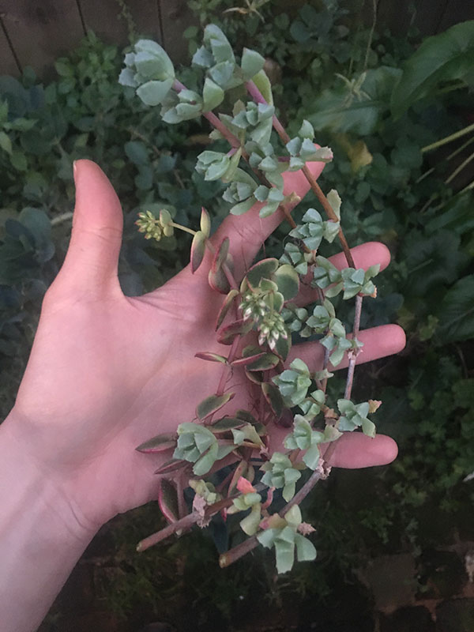

This April in San Francisco, I ran an art project that prototyped a
feminine economy.
Inspired by Jennifer Armbrust's Proposals for the Feminine Economy, I wanted to know what a system
rooted in feminine values might look like.
I wanted to see if it was possible to build new systems to replace the old.
18 people participated and we practiced a new ways of being together and exchanging
what we have in abundance.

If you'd like to know how to create your own feminine economy, please get in touch: ainsley . wagoner @ gmail